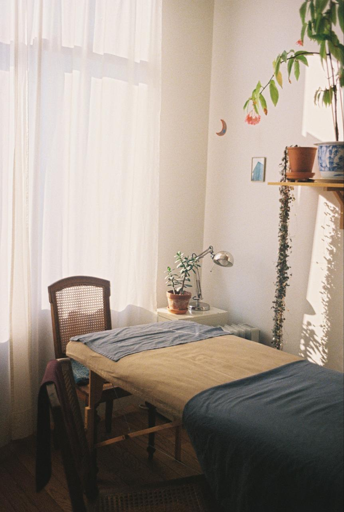
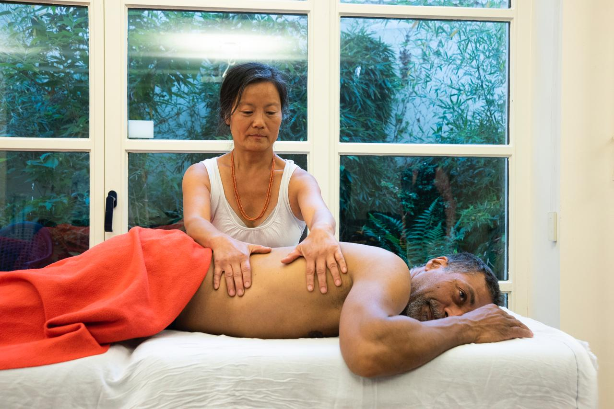
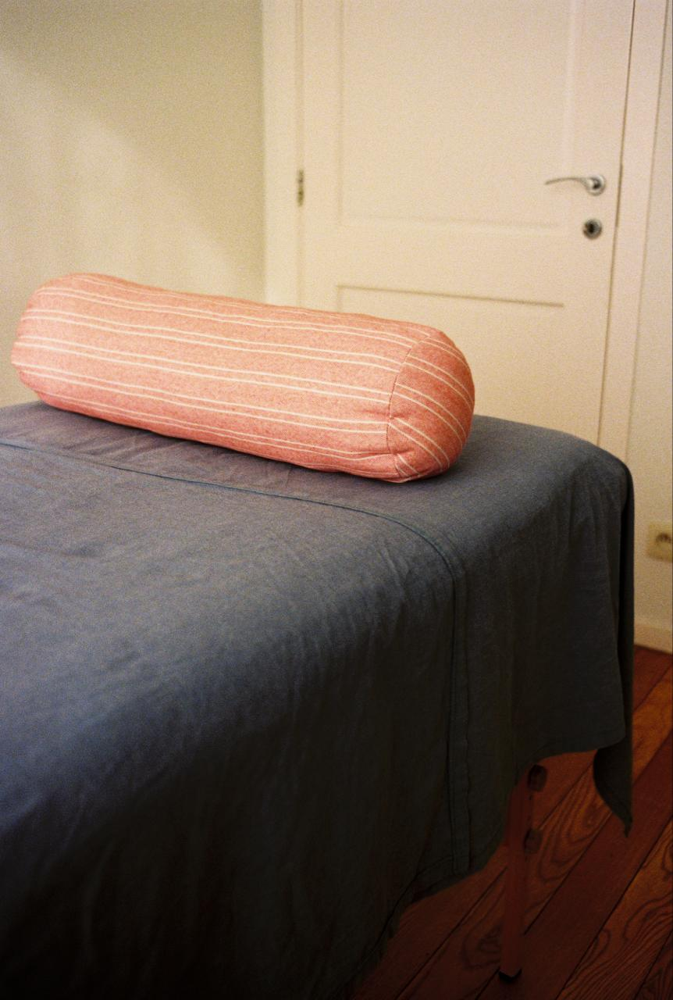
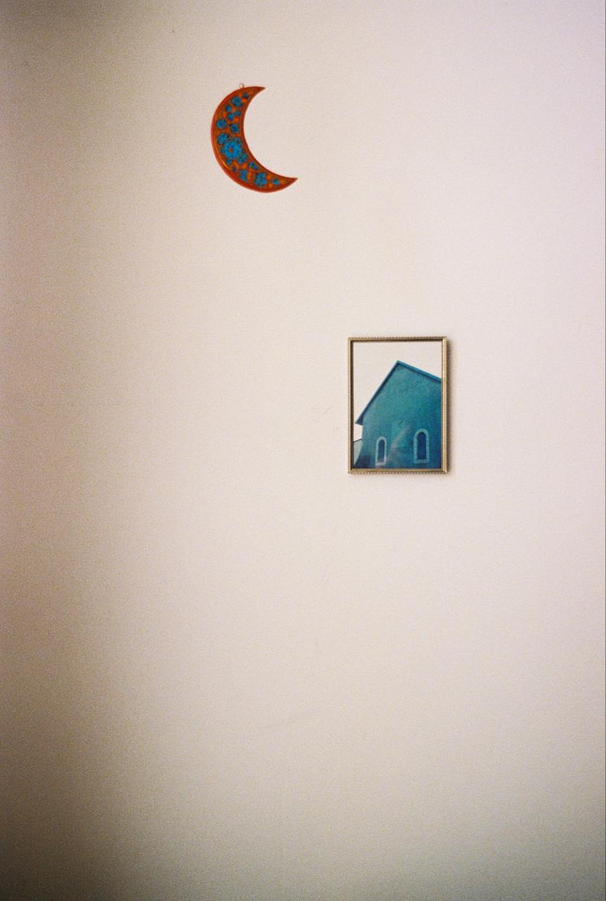
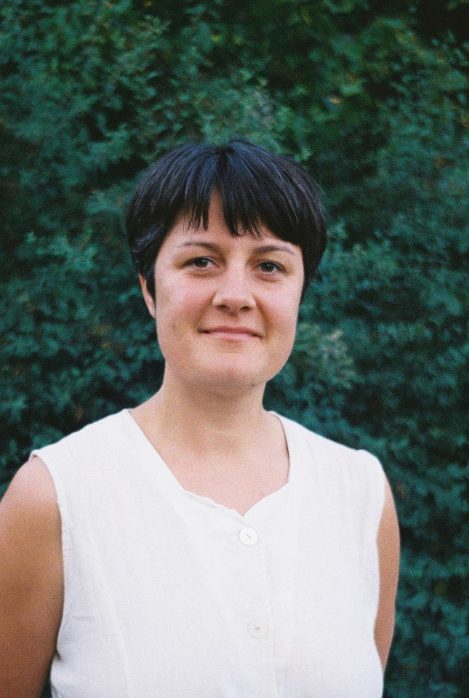

Ce que le corps tient, le corps peut le relâcher
La Méthode Rosen part d'un constat simple : nos tensions musculaires ne sont pas uniquement physiques. Elles portent en elles des émotions retenues et des postures que nous avons dû adopter. Au fil de notre histoire, notre corps a développé des stratégies pour faire face aux événements de la vie : pour nous protéger, pour maîtriser ou pour exister tout simplement.
La Méthode Rosen fait le lien entre les tensions musculaires chroniques et notre mémoire corporelle. Elle se pratique par un toucher doux et bienveillant. Par la détente profonde des muscles, des fascias et de la respiration, elle permet de relâcher nos blocages et de prendre conscience de nos schémas de réactions inconscients. Progressivement, ce qui était retenu se libère : on retrouve plus de sécurité et de vitalité, tout en éveillant une conscience et une acceptation plus juste de qui nous sommes vraiment.
La Méthode Rosen agit sur les plans métabolique, émotionnel, comportemental et mental.

Peut-être vous reconnaissez-vous ici
Vous ressentez un mal-être difficile à nommer. Vos émotions semblent inaccessibles, ou au contraire débordantes. Peut-être traversez-vous un burn-out, une anxiété persistante, ou répétez-vous les mêmes schémas sans comprendre pourquoi. Vous avez l'impression d'être coupé·e de votre corps, de vos sensations, et de vivre dans votre tête. Peut-être avez-vous des douleurs ou des tensions chroniques que vous ne parvenez pas à vous expliquer. La parole seule ne suffit pas, ou plus, à aller là où vous en avez besoin.
La Méthode Rosen s'adresse à celles et ceux qui sentent qu'il est temps d'écouter autrement.


Un espace pour se poser, vraiment
Une séance Rosen se déroule couché·e sur une table de massage, couvert·e d'un drap, dans un cadre confidentiel et bienveillant. Le drap est écarté uniquement dans les zones travaillées.
Guidée par la lecture du corps, l'observation de la respiration et l'échange avec vous, mon travail consiste à aller à la rencontre de vos tensions musculaires. Mon toucher vous accompagne alors dans la prise de conscience de votre corps, de ses retenues et de son potentiel.

Un chemin personnel, devenu un métier
La Méthode Rosen m'accompagne depuis de longues années. Au départ, je me suis tournée vers le travail corporel parce que je me sentais limitée par la thérapie cognitive. Rapidement, j'ai ressenti la puissance de cette méthode et le début d'évolutions profondes qui se sont dessinées en moi.
Ce que je croyais être une démarche de soin personnel est devenu, au fil des années, un nouveau métier. J'ai alors décidé de lancer ma pratique en cabinet en tant que praticienne interne. Parallèlement à cela, j'ai co-fondé l'Institut Méthode Rosen Belgique avec Anne Closset. L'Institut a comme objectif de développer ce travail corporel en Belgique.